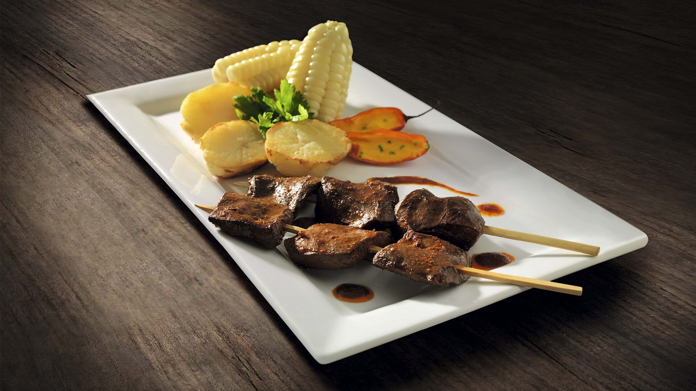

Anticucho
El anticucho es un plato tradicional peruano con raíces en la cocina andina, que se ha convertido en una de las delicias más populares de la gastronomía criolla. Originalmente, era un plato de origen indígena, y con el tiempo se fusionó con influencias africanas y españolas.
Ingredientes: Corazón de res (generalmente), ají panca, ajo, vinagre, comino, sal, pimienta, papas, y choclo.
Preparación: El corazón de res se limpia y se corta en trozos. Se marina en una mezcla de ají panca, ajo, vinagre, comino, sal y pimienta. Luego, se ensartan los trozos de carne en brochetas y se asan a la parrilla o al carbón hasta que estén bien dorados. Se sirve acompañado de papas cocidas, choclo y salsa de ají. A menudo se le añade una guarnición de salsa criolla (cebolla, ají, cilantro y limón) para un toque adicional de sabor.